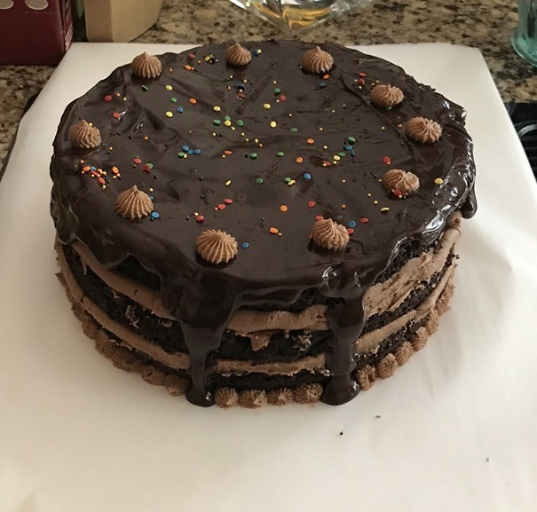

Vanilla Cake
- 2 ½ cups gluten-free 1:1 baking flour
- 2 ½ tsp baking powder
- ½ tsp baking soda
- ½ tsp salt
Wet Ingredients
- ¾ cup unsalted butter, softened
- 1 ¾ cups granulated sugar
- 4 large eggs
- 1 tbsp pure vanilla extract
- 1 cup milk (or almond/oat milk)
- ½ cup sour cream
Instructions
- Preheat oven to 350°F. Grease and line two 8-inch round cake pans.
- Whisk together flour, baking powder, baking soda, and salt.
- Beat butter and sugar until light and fluffy.
- Add eggs one at a time. Stir in vanilla.
- Alternate adding dry ingredients and milk.
- Fold in sour cream gently.
- Divide batter evenly into pans.
- Bake about 30 minutes, or until a toothpick comes out clean.
- Cool completely before frosting.

Chocolate Cake
Dry Ingredients
- 2 cups gluten-free 1:1 baking flour
- ¾ cup unsweetened cocoa powder
- 2 cups granulated sugar
- 1 ½ tsp baking powder
- 1 ½ tsp baking soda
- ½ tsp salt
Wet Ingredients
- 3 large eggs (room temperature)
- 1 cup milk (or almond/oat milk)
- ½ cup vegetable oil
- 2 tsp vanilla extract
- 1 cup hot coffee (or hot water)
Instructions
- Preheat oven to 350°F. Grease and line two 8-inch round cake pans.
- Mix dry ingredients: Whisk together flour, cocoa powder, sugar, baking powder, baking soda, and salt.
- Add wet ingredients (except coffee): Add eggs, milk, oil, and vanilla. Mix until smooth.
- Add hot coffee: Slowly pour in hot coffee and mix. (The batter will be thin — that’s normal! It makes the cake super moist.)
- Bake: Divide evenly into pans. Bake about 35 minutes, until a toothpick comes out clean.
- Cool completely before frosting.
